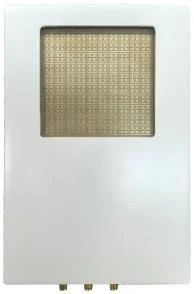
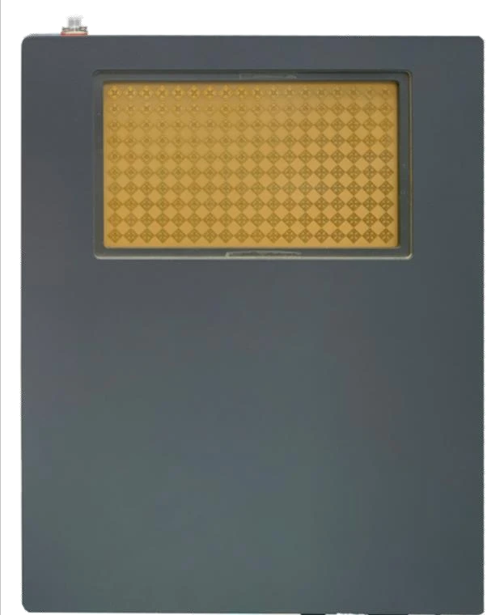
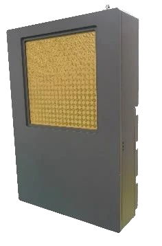
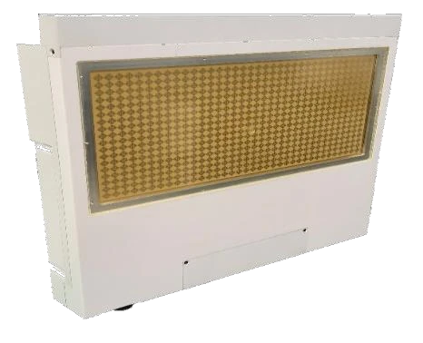

毫米波相控阵网桥
采用毫米波相控阵技术，服务于点对点通信与专网互联，可用于运营商回传、城市互联以及电力、油田、矿山、工厂和码头等场景。
产品型号对照
PMT-MPTP-04EL 与 PMT-MPTP-17EL 工作在 24.5–27.5 GHz，提供不同的吞吐量、传输距离和功耗配置。
| 参数 | PMT-MPTP-04EL | PMT-MPTP-17EL |
|---|---|---|
| 供电 | 24 V / 3 A DC | 24 V / 5 A DC |
| 发射/接收功耗 | 40 W / 30 W | 75 W / 55 W |
| 3 dB 波束扫描范围 | 9°（离轴角） | 15°（离轴角） |
| EIRP | 57 dBm（Max） | 66 dBm（Max） |
| 吞吐量与距离 | >2.0 Gbps，>2.0 km | >1.0 Gbps，>5.0 km |
| 硬件接口 | 10G SFP 光口×1，10G GbE 电口×1，电源接口×1，GPS 接口×1 | |
| 工作频段 | 24.5–27.5 GHz | |
| 工作带宽 | 20 / 40 / 80 / 160 / 320 MHz | |
| 法向波束宽度 | 4.2° | |
| 防护等级 | IP67 | |
| 工作温度 | −40℃ 至 70℃ | |
| 尺寸 | 315 × 220 × 70 mm | |
| 重量 | 4.34 kg（裸机）／4.92 kg（带支架） | |
型号参数依据公司提供的产品资料第10页整理。发射/接收功耗按 TX/RX 顺序列示，EIRP 为最大值，波束扫描范围为离轴角。吞吐量与传输距离对应各自型号，实际链路表现与环境、部署和配置有关。
通用手册配置参考
以下为通用产品手册列示的四档网桥配置，手册介绍的工作频率为 24–29 GHz。配置未标注上述两个产品型号，仅用于了解不同距离与速率组合，不作为 PMT-MPTP-04EL 或 PMT-MPTP-17EL 的型号参数。




四档手册配置对照
| 参数 | 500 m-1 km 配置 | 1-2 km 配置 | 2-5 km 配置 | 10-30 km 配置 |
|---|---|---|---|---|
| 覆盖距离 | 500 m-1 km | 1-2 km | 2-5 km | 10-30 km |
| 速率 | 最高 3.7 Gbps | 3.5 Gbps | 1.6 Gbps | 300 Mbps |
| 尺寸 | 100 × 200 mm | 200 × 300 mm | 200 × 300 mm | 300 × 500 mm |
| 功耗 | ＜30 W | ＜50 W | ＜80 W | ＜150 W |
以上为手册列示的不同配置，距离与速率不可跨配置组合。实际链路表现与环境、部署及配置有关，具体指标以双方确认的技术规格为准。